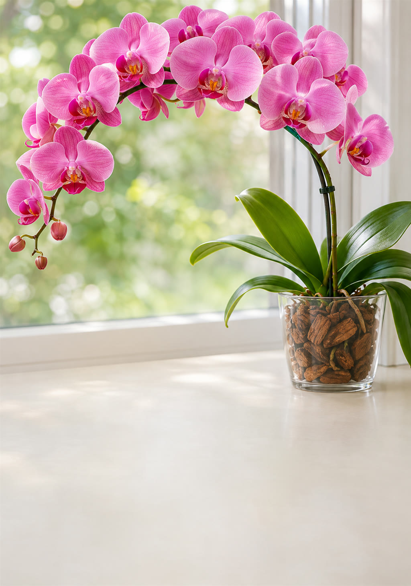

Aprenda o que ela precisa de verdade e faça ela florir de novo: rega sem erro, luz certa, adubo, replante e o truque da noite fresca que faz a haste aparecer.
Quero minha orquídea florida →
Folhas, raízes, lugar e rotina: descubra o que está travando a sua.
Replante, lugar novo e a rega pelo teste da raiz.
Adubo do jeito certo, umidade e folhas na cor ideal.
O truque da noite fresca, lavagem do vaso e o antes e depois.
A maioria das orquídeas vive agarrada nas árvores, com raiz ao vento, luz filtrada e noites frescas. Quando é tratada como uma planta comum, ela sobrevive, mas não floresce. Ou apodrece.
Por que ela vive nas árvores, os tipos mais comuns e a anatomia rápida.
Rega, luz, ar, vaso e substrato, adubo, a noite fresca e a haste.
Pra orquídea parada, fraca ou que nunca mais floriu.
Folhas, raízes, miolo, botões caindo, pragas e o keiki.
Logo depois do pagamento aprovado, o acesso ao PDF chega no seu e-mail. Dá pra ler no celular, no computador ou imprimir.
O foco é a phalaenopsis (a mais vendida no Brasil), com dicas pra dendróbio, denphal, cattleya e chuva-de-ouro.
Muitas vezes, sim. O guia tem o passo a passo de primeiros socorros pra raiz podre e folha mole.
Depende da planta e da época. Raiz e folha nova aparecem em semanas; a haste costuma vir no outono e inverno, depois da noite fresca.
Sim. O guia ensina a escolher o melhor lugar e o que fazer se a casa for escura.
Você tem 7 dias de garantia. Pede o reembolso e recebe 100% do valor de volta.